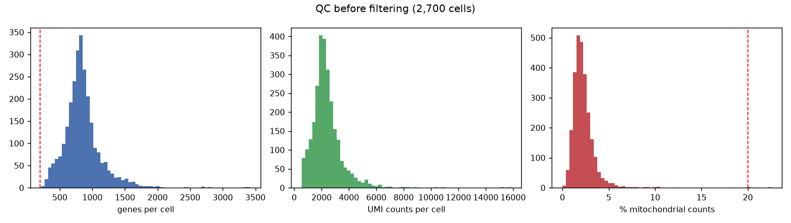
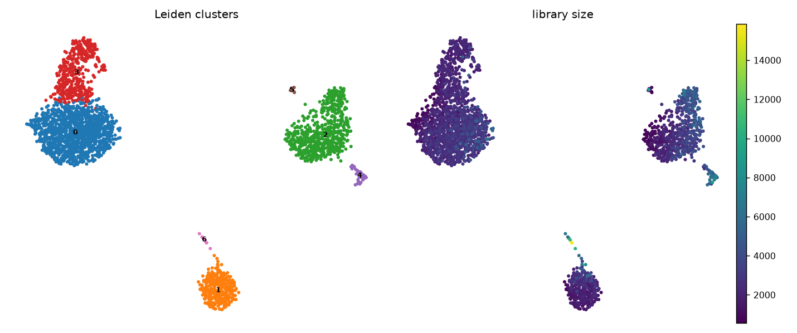
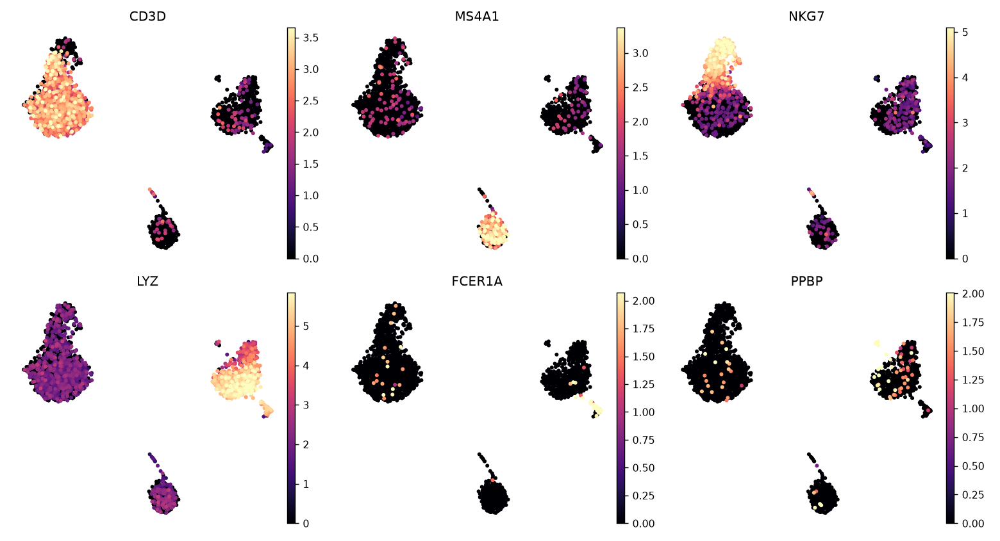

| Step | Cells |
|---|---|
| Loaded | 2700 |
| After filter (min 200 genes, mito < 20.0%) | 2698 |

Filtering thresholds are explicit and applied once. Cells outside them are removed before normalisation, not after clustering.

2000 highly variable genes, 50 PCs, 10 neighbours, Leiden at resolution 0.5. Clustering is on the expression graph; UMAP is used only for display.
| Cluster | Cells | Assigned | Marker score |
|---|---|---|---|
| 0 | 1224 | T cells (CD4/CD8) | 0.802 |
| 1 | 346 | B cells | 0.904 |
| 2 | 653 | Monocytes (CD14) | 0.837 |
| 3 | 421 | NK cells | 0.697 |
| 4 | 34 | Dendritic cells | 0.912 |
| 5 | 12 | Platelets | 1.0 |
| 6 | 8 | Proliferating cells | 0.875 |
Labels come from canonical PBMC marker sets, scored by detection rate per cluster. A cluster
is left unassigned when no marker set passes both a score and a fraction-expressing
test, rather than being forced into the nearest label.

| Cluster | Gene | log2FC | adj. p |
|---|---|---|---|
| 0 | RPS12 | 1.06 | 2.1e-227 |
| 0 | LDHB | 2.72 | 8.1e-226 |
| 0 | CD74 | -2.84 | 2.5e-221 |
| 1 | CD74 | 4.09 | 2.9e-182 |
| 1 | CD79A | 7.68 | 2.9e-168 |
| 1 | HLA-DRA | 4.90 | 1.7e-166 |
| 2 | FTL | 3.83 | 0.0e+00 |
| 2 | FTH1 | 3.24 | 0.0e+00 |
| 2 | TYROBP | 6.23 | 3.7e-306 |
| 3 | NKG7 | 7.12 | 2.8e-216 |
| 3 | CST7 | 6.20 | 3.4e-167 |
| 3 | CTSW | 4.66 | 6.1e-156 |
| 4 | HLA-DPA1 | 4.40 | 9.8e-17 |
| 4 | HLA-DPB1 | 4.45 | 7.6e-16 |
| 4 | HLA-DRB1 | 4.33 | 1.8e-15 |
| 5 | SDPR | 12.03 | 1.9e-06 |
| 5 | GNG11 | 12.59 | 1.9e-06 |
| 5 | HIST1H2AC | 9.90 | 1.9e-06 |
| 6 | TYMS | 10.17 | 5.3e-03 |
| 6 | KIAA0101 | 9.76 | 5.3e-03 |
| 6 | ZWINT | 8.57 | 5.3e-03 |
Wilcoxon rank-sum on the raw counts, one test per cluster. Full table in
results/tables/cluster_markers.csv.
Cells with fewer than 200 detected genes or more than 20.0% mitochondrial counts were excluded. Counts were normalised to 10,000 per cell and log-transformed. 2000 highly variable genes were selected, scaled, and reduced with PCA (50 components). A k-nearest-neighbour graph (k = 10) was clustered with Leiden at resolution 0.5. Cluster markers were identified with the Wilcoxon rank-sum test, and clusters were annotated against canonical PBMC marker sets.
results/tables/cluster_markers.csv — all markers, all clustersresults/tables/cluster_annotation.csv — cluster sizes and assignment scoresresults/adata_processed.h5ad — processed object, re-openable with scanpyresults/figures/ — QC, UMAP, marker expression